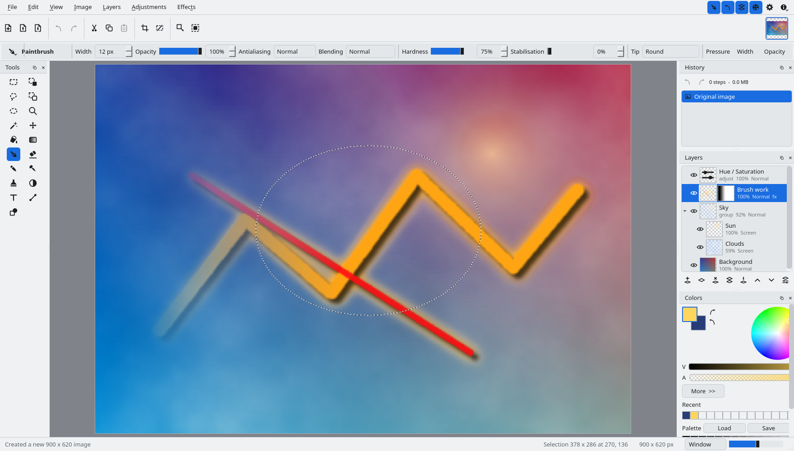

Using Tessel
Everything below describes the program as it ships in 1.0.0. If you would rather learn by poking at it, open an image, press F1 for the shortcut list and watch the status bar: whichever tool is active, its left hand end tells you what the mouse buttons do.
The interface

The menu bar
Seven menus, left to right:
- File
- New, Open, Open Recent, Save, Save As, Save All, Print, Close and Exit.
- Edit
- Undo and Redo; Cut, Copy, Copy Merged, Paste, Paste Into New Layer and Paste Into New Image; Select All, Deselect All, Invert Selection, Copy Selection and Paste Selection; Erase Selection and Fill Selection.
- View
- Zoom In, Zoom Out, Fit to Window, Actual Size and Zoom to Selection; the Pixel Grid, Rulers and Selection Outline switches; and Full Screen.
- Image
- Crop to Selection, Resize Image, Canvas Size, the four flips and rotations, and Flatten. These act on every layer at once.
- Layers
- Add, Delete, Duplicate, Merge Layer Down and Import from File; Flip Layer Horizontal and Vertical and Rotate / Zoom Layer; Move Layer Up and Down and Toggle Layer Visibility; the four Go to Layer commands; and Layer Properties.
- Adjustments
- The thirteen adjustments, built from the effect registry, so the menu and the program can never drift apart.
- Effects
- Repeat Last Effect at the top, then one submenu per category: Artistic, Blurs, Color, Distort, Noise, Object, Photo, Render and Stylize.
An entry whose name ends in three dots opens a dialog; the rest apply straight away. At the right hand end of the menu bar sit six icon buttons rather than menus of their own: four switches for the Tools, History, Layers and Colors windows, then Settings, then Help, whose menu holds Keyboard Shortcuts (F1) and About Tessel.
The main toolbar
New, Open and Save; Undo and Redo; Cut, Copy and Paste; Crop to Selection and Deselect All; Resize Image and Canvas Size. The thumbnails of every open image live at its right hand end: click one to switch to it, and each has its own close button. Ctrl+Tab and Ctrl+Shift+Tab step through the same list.
The tool options bar
The row under the main toolbar belongs to the active tool. It starts with a button that drops down the full tool list (Alt+T) and the tool's name, and then holds that tool's own controls: width, opacity, antialiasing, blending, tolerance, shape, font and so on. Changing one takes effect on the next stroke, and the settings stay put while you work.
The Tools palette
Nineteen tools in a two column grid of icons, read left to right and then down: Rectangle Select and Move Selected Pixels; Lasso Select and Move Selection; Ellipse Select and Zoom; Magic Wand and Pan; Paint Bucket and Gradient; Paintbrush and Eraser; Pencil and Color Picker; Clone Stamp and Recolor; Text and Line / Curve; and Shapes. Hovering one shows its name and its key; the keys are listed in full on the shortcuts page.
Colors
The two swatches at the top left are the primary and secondary colours. Click one to make it the active colour, and use the two small arrow buttons beside them to swap the pair (X) or reset it to black and white (D). The colour wheel sets the hue and saturation of the active colour, the two ramps under it set value and alpha, and the palette grid at the bottom holds the fixed palette: left click takes a colour as the primary, right click as the secondary. More opens the numeric side: red, green and blue, hue, saturation and value, alpha, and a hex field.
History
Every step of the session, from the image as it was opened or created down to the most recent edit. Click any entry to move the document to that point, forwards or backwards; the two buttons at the top are Undo and Redo, and beside them is a running count of steps and of how much memory they hold.
Layers
The layer list runs top layer first, which is the order they are composited in. Each row shows an eye for visibility, a thumbnail, the layer name and, underneath it, the opacity and the blend mode. Double click a row to open Layer Properties. The buttons along the bottom are Add New Layer, Delete Layer, Duplicate Layer, Merge Layer Down, Move Layer Up, Move Layer Down and Layer Properties.
The status bar
The left hand end is the hint for the active tool, or the last thing that happened, such as Created a new 900 x 620 image. The right hand end keeps four readouts together: the cursor position in image pixels, the selection bounds as Selection 378 x 286 at 270, 136, the image size, and the zoom, which is both a slider and an editable combo box: Window to fit the image, then fixed steps from 1 percent to 3200 percent, or any figure you care to type.
How the tools work
Ideas shared by all of them
- The right mouse button draws with the secondary colour wherever drawing with a colour makes sense.
- Holding the space bar pans the canvas with any tool active, and the middle mouse button does the same.
- Every drawing tool is clipped to the active selection, so a selection doubles as a stencil.
- Ctrl and the wheel zoom around the pointer; the wheel on its own scrolls.
- Most tools carry an Opacity percentage, an Antialiasing switch and a Blending box holding the same fourteen blend modes the layers use, so a stroke can be multiplied or screened onto the layer without a second layer.
- Pressing a tool's letter again cycles through the tools that share it, and Shift with that letter cycles backwards.
Painting
- Paintbrush (B)
- Drag to paint, right drag to paint with the secondary colour. Width, opacity, antialiasing, blending and hardness. Hardness sets how wide the soft edge is: at the top of the range the stroke has a crisp rim, and at the bottom it is a faint haze that fades across the whole width. One stroke lays down one coat, so passing back over your own stroke does not darken it; release and draw again to build the colour up.
- Pencil (P)
- Single hard pixels, with no antialiasing. Only a blending box, since nothing else would apply.
- Eraser (E)
- Erases to transparency; a right drag erases softly. Width, opacity and hardness.
- Clone Stamp (L)
- Ctrl+click sets the source, then drag to paint copies of it. Aligned keeps the source at a fixed offset from the brush instead of starting over at every stroke, and Sample merged reads the composited image rather than the active layer.
- Recolor (R)
- Paints the primary colour only over pixels that match the secondary colour, within the tolerance you set.
- Paint Bucket (F)
- Fills an area of similar colour; a right click fills with the secondary colour. Fill is Contiguous or Global, and there is a tolerance, an opacity, antialiasing, sample merged and a blending box.
- Gradient (G)
- Drag to lay one down, hold Shift to constrain the angle. Five shapes (Linear, Linear reflected, Radial, Conical and Diamond), a mode of Colour or Transparency, an opacity, an optional dither and a blending box. A right drag runs the gradient the other way round, from the secondary colour to the primary.
Shapes, lines and text
- Line / Curve (O)
- Drag for a line, then drag the middle handles to bend it into a curve. Enter finishes, Esc cancels. The start and end caps are each Flat, Arrow or Round.
- Shapes (O again)
- Thirty of them, from Rectangle, Rounded rectangle, Ellipse and the polygons through five stars to Arrow, Chevron, Cross, Plus, Heart, Crescent, Cloud, Speech bubble, Ring, Pie wedge, Lightning and Teardrop. Drag to draw, Shift keeps the proportions. The style is Outline, Filled, or Outline and fill: the outline is drawn in the primary colour and the fill in the secondary.
- Text (T)
- Click and type. Enter adds a line, Ctrl+Enter or switching tools finishes, Esc cancels. Font family, size in points, bold, italic, underline and alignment, plus the usual opacity, antialiasing and blending. The text stays editable until it is committed, at which point it becomes pixels like everything else.
Looking around and sampling
- Color Picker (K)
- Click to pick the primary colour, right click for the secondary. It can sample the active Layer or the whole Image, over an area of 1 x 1, 3 x 3, 5 x 5 or 9 x 9 pixels, and it can switch straight back to the previous tool, to the Pencil or to the Paintbrush once it has picked.
- Zoom (Z)
- Click to zoom in, right click to zoom out, or drag a rectangle to zoom into it.
- Pan (H)
- Drag to scroll the canvas. The space bar does the same without leaving the tool you are using.
Selections
There are four selection tools, all on S: Rectangle Select, Lasso Select, Ellipse Select and Magic Wand. They share a row of five combine modes at the left of the options bar, which decide what a new shape does to the selection that is already there:
| Mode | Result |
|---|---|
| Replace | The new shape becomes the selection. |
| Union | Adds the new shape to it. |
| Subtract | Cuts the new shape out of it. |
| Intersect | Keeps only what the two have in common. |
| Exclusive or | Keeps what belongs to one of them but not to both. |
While you drag, Ctrl adds and Alt subtracts, whichever mode the bar is set to, and Shift keeps a rectangle square or an ellipse circular. The lasso draws a freehand outline that closes itself when you let go. The magic wand selects a region of similar colour: drag up or down after clicking to adjust the tolerance without going back to the options bar, and choose Contiguous or Global flood, and whether it samples the layer or the merged image.
The selection is antialiased unless you turn that off, and it is stored as a mask, so it keeps soft edges rather than rounding everything to whole pixels. What it then does:
- It clips every drawing tool, every adjustment and every effect.
- Delete erases inside it, Backspace fills it with the primary colour.
- Image > Crop to Selection trims the whole image to its bounds.
- Edit > Copy Selection and Paste Selection move the shape itself between images, without the pixels.
- View > Selection Outline hides the marching outline when it is in the way, while leaving the selection in force.
- It is saved inside a
.tesselfile along with the layers.
Moving what is selected
Move Selected Pixels (M) lifts the selected pixels onto a floating buffer: drag it anywhere, nudge it with the arrow keys, or drag a corner handle to scale it. Enter drops it where it stands, and Esc drops it and clears the selection as well; Ctrl+Z takes the whole move back in one step. Move Selection (M again) slides the outline on its own and leaves the pixels where they are, which is the quickest way to reuse a shape somewhere else.
Layers
An image can hold any number of layers. Each one has a name, a visibility switch, an opacity from 0 to 100 percent and a blend mode, all four of which live in Layer Properties (F4) and preview on the canvas while the dialog is open.
The fourteen blend modes are Normal, Multiply, Additive, Color Burn, Color Dodge, Reflect, Glow, Overlay, Difference, Negation, Lighten, Darken, Screen and Xor. The same list appears in the Blending box of the drawing tools and in the effect dialogs, so a single stroke or a single effect can be composited the same way a whole layer would be.
From the Layers menu or the buttons under the layer list you can add, delete, duplicate, merge down, move up or down, toggle visibility, flip horizontally or vertically, and import any readable image file as a new layer. Rotate / Zoom Layer (Ctrl+Shift+Z) turns and scales the active layer about its centre, with an offset and an optional tiling of the result, and previews as you change the numbers. Image > Flatten (Ctrl+Shift+F) collapses everything into one layer.
Resizing and rotating are done in premultiplied alpha, so a transparent edge does not bleed a halo into the pixels next to it.
Adjustments and effects
Both come from the same registry, and the difference is only where they sit. The Adjustments menu holds the thirteen that change colour without changing shape: Auto Level, Black and White, Brightness / Contrast, Color Balance, Color Temperature, Curves, Hue / Saturation, Invert Alpha, Invert Colors, Levels, Posterize, Sepia and Threshold. The Effects menu holds the other forty, in nine submenus:
| Category | Effects |
|---|---|
| Artistic | Oil Painting, Pencil Sketch, Ink Sketch, Mosaic Tiles |
| Blurs | Gaussian Blur, Unfocus, Motion Blur, Radial Blur, Zoom Blur, Fragment, Surface Blur |
| Color | Quantize, Duotone |
| Distort | Bulge, Twist, Polar Inversion, Tile Reflection, Dents, Frosted Glass, Pixelate, Crystalize |
| Noise | Add Noise, Median, Reduce Noise |
| Object | Drop Shadow, Outline Object, Outer Glow |
| Photo | Sharpen, Glow, Vignette, Soft Portrait, Red Eye Removal |
| Render | Clouds, Julia Fractal, Mandelbrot Fractal, Checkerboard |
| Stylize | Edge Detect, Emboss, Relief, Outline |
How the dialogs preview
An effect declares its parameters and nothing else: an integer, a double, a switch, a choice, a colour, an angle, an offset or a curve. The dialog is generated from that list, which is why every effect in the program looks and behaves the same way and why no effect carries any widget code of its own.

Every change previews straight onto the canvas, at the real zoom and over the real layer, not in a thumbnail. The preview is pushed through the active selection, so only the part that would change is shown changing, and it is debounced by a few tens of milliseconds so that dragging a slider stays smooth. Reset puts the parameters back to their defaults, Cancel drops the preview and leaves the layer untouched, and OK commits a single undoable step. Ctrl+F then repeats that effect on the next layer or the next image with the same settings, without opening the dialog again.
Curves and Levels
These two have hand written dialogs, because a generated one could not do them justice. Both draw the histogram of the current layer behind the controls.
-

Curves: click to add a control point, drag to move it, right click to remove it. The transfer map is Luminosity or the separate colour channels, and Reset channel clears just the one you are on. -

Levels: input black and white, gamma, output black and white, with the red, green and blue channels switchable one at a time and an Auto button that finds the ends for you.
Files and formats
.tessel- The native format: a zip holding one PNG per layer, a JSON manifest with the names, opacities and blend modes, the selection, a flattened image and a thumbnail. It is written to a temporary file and moved into place, so an interrupted save cannot destroy the previous one.
.ora- OpenRaster, which keeps layers, opacity and blend modes and is read by Krita, GIMP and MyPaint. This is the format to use when the image has to leave Tessel with its layers intact.
- Flat images
- PNG, JPEG, BMP, TIFF, WebP, TGA, GIF and ICO, plus whatever else the Qt image plugins on the system can handle. Saving to one of these flattens the image. For the lossy formats a dialog asks for the quality first and keeps a live estimate of the resulting file size next to the slider.
Paint.NET files. .pdn cannot be read: the format is an
undocumented serialisation of .NET objects. Tessel says so when one is opened, and
suggests exporting .ora or .png from Paint.NET instead.
Settings
The cog at the right hand end of the menu bar opens Settings, which is short on purpose:
- Appearance: the theme, Dark or Light. It applies immediately, icons and all, because they are redrawn in the new foreground colour rather than reloaded.
- New images: the default width and height offered by File > New.
- History: the maximum number of steps and the memory budget in megabytes. The undo stack is capped by whichever it reaches first.
- Window: reset the panel layout, if the docks have been dragged somewhere you would rather they were not.
Window geometry, dock layout, recent files and the view switches are remembered between sessions.